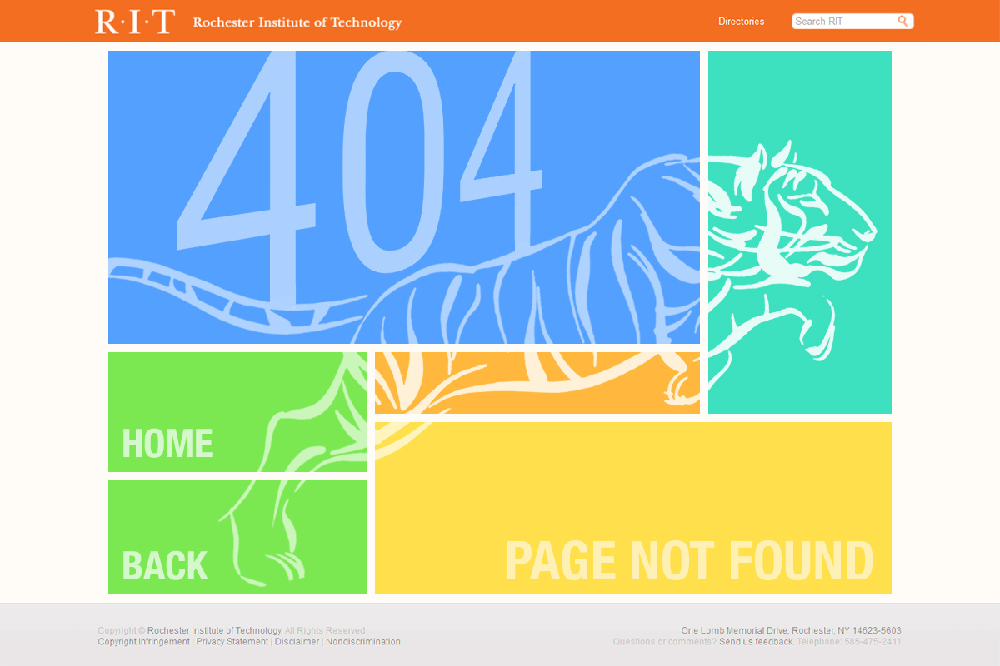

projects
< rit 404
Using Adobe Photoshop, I designed and created a new 404 Page for the RIT website that complies with RIT's corporate identity manual.
The goal of this project was to create a 404 page that is visually interesting, functional, and user-friendly using the 960 grid. I was inspired by the 960 grid and the metro-themed tiles of Windows 8. To create visual interest, I incorporated the tiger, the RIT mascot, to contrast its fluidity to the rigidness of the tiles. Also, this page notifies the user of the error that occurred and provides options to navigate to Home or back to the previous page.